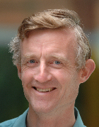
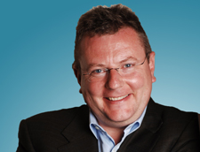

We are pleased to have been able to invite two renowned speakers to lead plenary sessions at this years conference.
Simon Peyton Jones
 Simon Peyton Jones, MA, MBCS, CEng, graduated from Trinity College Cambridge in 1980. After two years in industry, he spent seven years as a lecturer at University College London, and nine years as a professor at Glasgow University, before moving to Microsoft Research (Cambridge) in 1998.
His main research interest is in functional programming languages, their implementation, and their application. He has led a succession of research projects focused around the design and implementation of production-quality functional-language systems for both uniprocessors and parallel machines. He was a key contributor to the design of the now-standard functional language Haskell, and is the lead designer of the widely-used Glasgow Haskell Compiler (GHC). He has written two textbooks about the implementation of functional languages.
More generally, he is interested in language design, rich type systems, software component architectures, compiler technology, code generation, runtime systems, virtual machines, and garbage collection. He is particularly motivated by direct use of principled theory to practical language design and implementation -- that's one reason he loves functional programming so much.
His home page is at http://research.microsoft.com/~simonpj.
Ian McCaig
 Ian is the CEO of lastminute.com - Europe’s largest online travel and leisure business.
He joined the company as Chief Operating Officer (COO) in August 2003, five years after it was founded by entrepreneurs Brent Hoberman and Martha Lane Fox. Working alongside the co-founders, Ian helped grow the business from £500ml total transaction value (TTV) in 2003 to nearly three times that by 2005, when the company was sold to Travelocity for £577million.
During that time Ian managed the trading performance of lastminute.com businesses throughout Europe and headed up the acquisition and integration of 14 European businesses, including leading UK travel brands Holiday Autos, Medhotels and OTC. He subsequently took lastminute.com through its own acquisition by Travelocity and led the integration of Travelocity’s European business interests with those of the lastminute.com group.He was appointed group CEO in May 2006.
Ian started his career in the IT industry, where he spent seven years before moving into telecommunications in 1995, with a role at Telewest Communications. He went to mobile phone firm Nokia in 1997, where he led businesses in Europe, the Middle East & Asia and, in 2002, launched some of the world’s first commercial 3G networks.
Ian is a regular speaker at seminars and conferences where audiences have be challenged by his unique insights into how hi-tech companies can and should deliver real value.
Ian will be speaking at SP2009 on Innovation in a Crisis
Ian will talk about the impact of the world financial crisis on the business and practice of software development, and consider some of the imperatives that make continued innovation essential, with the risks that put it under pressure.